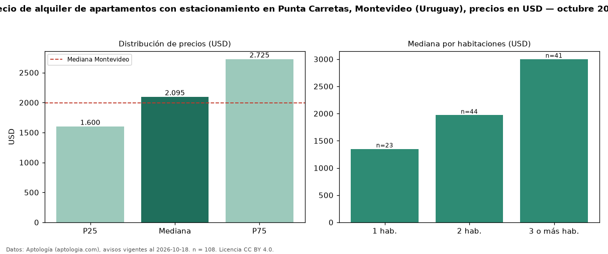

Precio de alquiler de apartamentos con estacionamiento en Punta Carretas, Montevideo (Uruguay), precios en USD — octubre 2026
Con 108 avisos vigentes, el canon mediano de apartamentos con estacionamiento en alquiler en Punta Carretas, Montevideo (Uruguay) es USD 2.095 al mes. Eso es 16 % más que la mediana de todos los apartamentos en alquiler de Punta Carretas (USD 1.800, n = 137); este segmento reúne el 79 % de esos avisos. Por metro cuadrado, la mediana es USD 21,91/m² al mes (n = 102), 1 % por debajo del conjunto de referencia (USD 22,24/m²). El área mediana anunciada es 100 m². El segmento con más oferta es el de 2 habitaciones (44 avisos, mediana USD 1.970); pasar de 1 habitación a 3 o más habitaciones cambia la mediana +122 %. La mitad central de los avisos va de USD 1.600 a USD 2.725 (razón 1,7), una dispersión moderada. La mediana de todos los apartamentos en alquiler de Montevideo es USD 1.990 (+5 % de diferencia). Datos: Aptología (aptologia.com), CC BY 4.0 — https://www.aptologia.com/uy/alquiler/montevideo/punta-carretas. Archivos: PDF, CSV con las cifras y gráfica PNG.

| Avisos únicos | 108 |
|---|---|
| Percentil 25 | COP 1.600 |
| Mediana | COP 2.095 |
| Percentil 75 | COP 2.725 |
| Mediana por m² | COP 21 |
Fuente: avisos vigentes de portales inmobiliarios recopilados por Aptología, deduplicados (mínimo 30 avisos únicos por celda). Precios pedidos, no cerrados. Fecha: 2026-10-18.